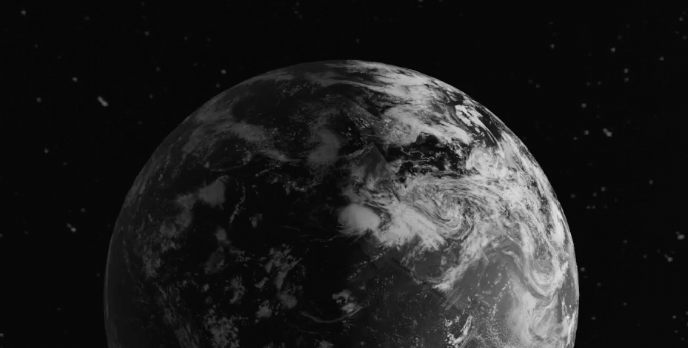

Earth
As seen by night
See the earth from the view of a satellite. More than 700 satellites orbit the earth while providing valuable data 24/7 as they create a “real-time portrait of Earth and its inhabitants, continually in a state of change” (Lempinen, 2021). A human-level perceptual understanding of an AI's surroundings is an awaited human achievement.
The aim of this project is to bring attention to the AI itself by changing the focus point to the way satellites perceive the Earth, home to people. The perspective of an AI is cold in the way that it’s just data. The aim of this project is to challenge the AI’s perception by incorporating art.
60 MAPS
Depicted on globe